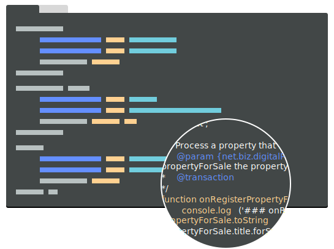

<!-- ---
layout: indexbase
title: Fabric Composer - Create business networks and blockchain applications quickly for Hyperledger
---
<div class="overlay"></div>
<div class="hero_container">
  <div class="leftcontent">
    <div class="textcontent">
        <h1>It's Fabriculous to meet you!</h1>
        <h2>Build business networks, applications and integration with Hyperledger Fabric blockchain</h2>
        <div class="buttoncontainer">
          <button class="primary">Play Online</button>
          <button class="secondary">Download & Tinker</button>
    </div>
    <p>First time here? Start with our Overview for an introduction to the key blockchain and Fabric Composer concepts or start right away, check your prerequisites and install the developer tools via npm.</p>
    <a>View the Docs</a>
  </div>
  </div>
  <div class="hero_illustration">
    
  </div>
</div> -->
